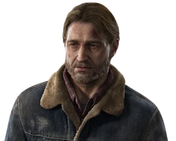
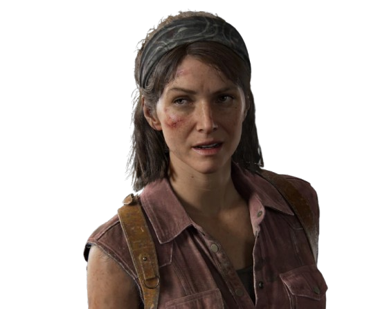
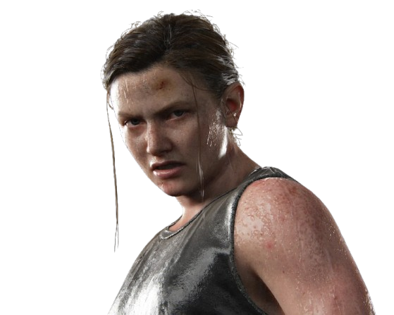
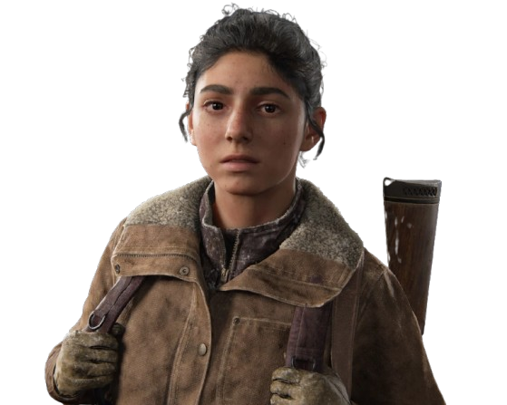
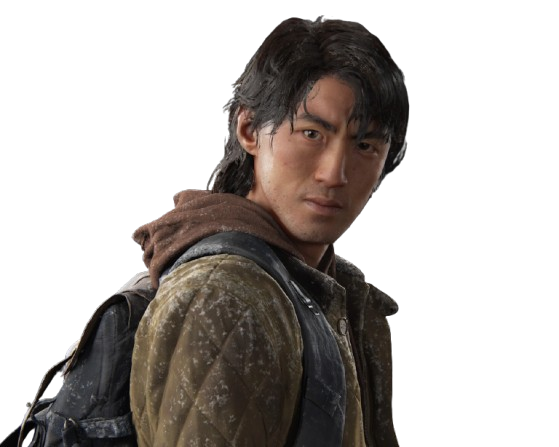
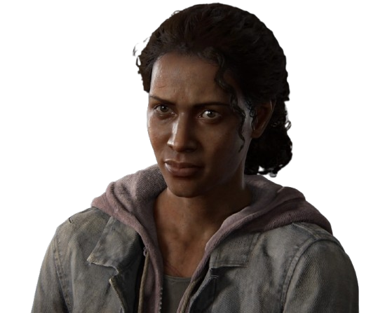
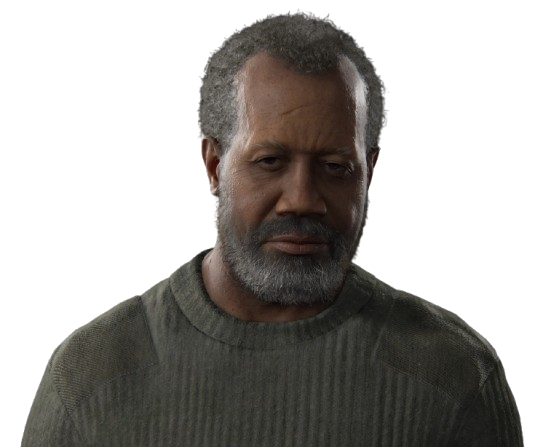

Ellie Williams é a icônica protagonista da franquia The Last of Us, criada pela Naughty Dog. Nascida em um mundo pós-apocalíptico destruído pela infecção do fungo Cordyceps, ela cresceu como órfã em uma zona de quarentena militarizada em Boston. Aos 14 anos, sua vida mudou drasticamente ao sobreviver a uma mordida de infectado, revelando que ela possui uma rara e inédita imunidade biológica, o que a transformou na única esperança conhecida para a criação de uma vacina.


Joel Miller é o coprotagonista do primeiro jogo da franquia The Last of Us e um dos personagens mais marcantes da história dos videogames. Antes do colapso global causado pelo fungo Cordyceps, ele vivia no Texas, trabalhava na construção civil e era um pai solo completamente dedicado à sua filha, Sarah. No entanto, sua vida foi despedaçada logo na primeira noite do surto, quando Sarah foi tragicamente assassinada por um soldado, um trauma que o transformou em um homem frio, amargurado e emocionalmente fechado por mais de duas décadas.

Tommy Miller é um personagem central na franquia The Last of Us, sendo o irmão mais novo de Joel e um dos pilares de apoio emocional e moral ao longo da história. Antes da pandemia do fungo Cordyceps, Tommy vivia no Texas e trabalhava na construção civil com o irmão, com quem compartilhava uma ligação muito forte. Na noite do surto, ele estava presente e ajudou Joel a tentar salvar Sarah, testemunhando em primeira mão a tragédia que destruiria a vida do irmão e moldaria o futuro de ambos.

Tess é uma personagem fundamental no universo de The Last of Us, atuando como a parceira de contrabando de Joel Miller na Zona de Quarentena de Boston, vinte anos após o colapso global. Conhecida no mercado negro por sua inteligência, frieza e autoridade, ela era amplamente respeitada e temida no submundo do crime. Tess era o cérebro das operações de contrabando, demonstrando uma habilidade estratégica que complementava perfeitamente a força bruta e a letalidade de Joel, com quem mantinha uma relação de profunda confiança mútua e implícita afeição.

Abby Anderson é a deuteragonista de The Last of Us Part II e uma das figuras mais complexas e divisivas da história dos videogames. Ela é filha de Jerry Anderson, o médico-chefe dos Vaga-lumes que foi morto por Joel Miller no final do primeiro jogo para salvar Ellie. Esse trauma profundo moldou completamente a vida de Abby, transformando uma jovem antes alegre em uma soldado obstinada, que passou anos treinando o seu corpo intensamente e se tornando a principal força de elite da Frente de Libertação de Seattle (WLF) com um único objetivo: encontrar e matar o assassino de seu pai.

Dina é uma das personagens mais importantes de The Last of Us Part II, atuando como o principal pilar emocional e o par romântico de Ellie. Órfã desde muito jovem e criada por sua irmã mais velha, Talia, ela eventualmente encontrou refúgio na próspera e segura comunidade de Jackson, no Wyoming. Com uma personalidade magnética, leal, bem-humorada e de espírito livre, Dina rapidamente se tornou uma figura muito querida e respeitada entre os sobreviventes locais.

Jesse é um personagem muito querido de The Last of Us Part II, destacado como um dos membros mais maduros, confiáveis e habilidosos da comunidade de Jackson. Ele atua como um dos líderes dos grupos de patrulha do assentamento, sendo responsável por garantir a segurança dos sobreviventes contra a ameaça de infectados e invasores. Reconhecido por sua lealdade inabalável aos amigos e pelo forte senso de dever, Jesse serve como um contraponto de sanidade, sensatez e altruísmo em meio ao caos e à violência que movem a narrativa.

Marlene é uma das personagens mais importantes de The Last of Us, conhecida como a líder absoluta dos Vagalumes, um grupo miliciano rebelde que luta para restaurar a democracia contra o regime opressor da FEDRA. Ela é a grande responsável por dar início à trama principal, agindo como a força motriz que une os caminhos de Joel e Ellie. Mais do que uma comandante militar, Marlene carrega um forte laço pessoal com o passado de Ellie: ela era a melhor amiga de Anna, a mãe da garota, e prometeu em seu leito de morte que cuidaria e protegeria a bebê.

Isaac Dixon é o líder implacável e comandante supremo da Frente de Libertação de Washington (WLF), facção militarizada que domina a cidade de Seattle em The Last of Us Part II. Ele é um veterano militar — tendo servido como fuzileiro naval antes do surto global — e usa toda a sua experiência tática para governar o grupo com punho de ferro, transformando civis e ex-membros de outras milícias em uma força de elite altamente disciplinada